1. 選擇權核心理論與雙賣策略基礎
在介紹下單機的演算法前，必須先了解其背後的金融邏輯。選擇權 (Options) 是一種衍生性金融商品，買方支付「權利金 (Premium)」換取未來履約的權利，而賣方則收取權利金並承擔履約義務。以下為構成市場的四大基本部位：
買權 (Call) 結構分析 看漲 vs 看不漲
買進買權 (Buy Call, BC)：看大漲。最大獲利無限，最大損失為支付的權利金。
賣出買權 (Sell Call, SC)：看不漲。最大獲利為收取的權利金，最大損失無限。
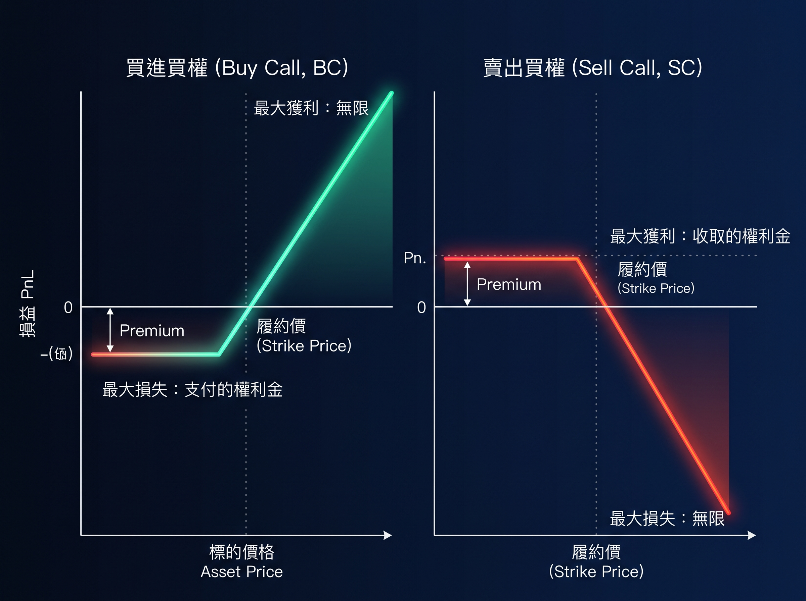
賣權 (Put) 結構分析 看跌 vs 看不跌
買進賣權 (Buy Put, BP)：看大跌。最大獲利極高，最大損失為支付的權利金。
賣出賣權 (Sell Put, SP)：看不跌。最大獲利為收取的權利金，最大損失極高。
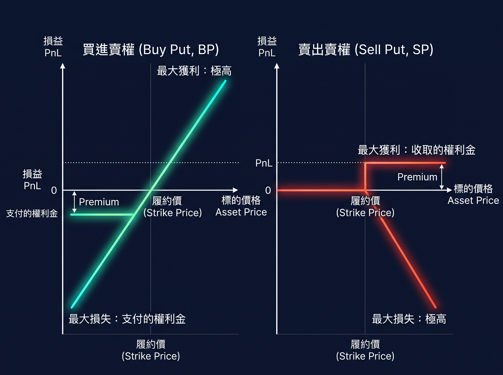
核心策略：雙賣策略 (Short Strangle / Straddle)
策略原理： 同時建立 賣出買權 (SC) 與 賣出賣權 (SP)，通常選擇價外 (Out-of-the-Money, OTM) 的履約價。 只要結算時，標的指數在兩個履約價的區間內盤整，選擇權的「時間價值 (Time Value)」會隨著時間流逝而歸零，賣方即可安全將兩邊的權利金全部收下。
為什麼需要自動化下單機？
雙賣策略被稱為「收租策略」，勝率極高，但最大弱點在於 風險無限。如果發生極端單邊行情 (黑天鵝)，虧損將極速擴大。 因此，人類盯盤往往會因為情緒不肯停損，或來不及反手避險。這促使我開發了這套系統，將「時間價值萃取」、「部位口數對沖」與「即時保證金監控」完全交由冰冷的程式碼嚴格執行。
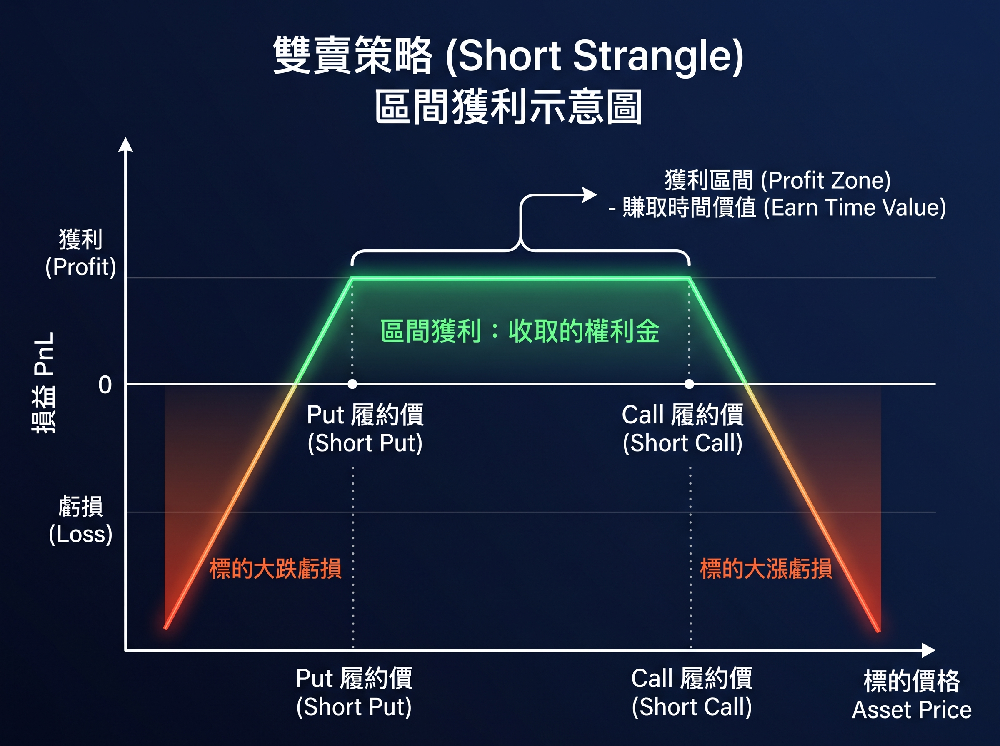
⚙️ 2. 完整執行流程與策略控制架構
本系統的核心是基於事件驅動（Event-driven）的微秒級/秒級交易閉環。下圖為下單機從啟動、監控、決策、風控到執行與雲端備份的完整運行軌跡，能有效佐證程式碼的完全自主開發與金融風險邏輯。
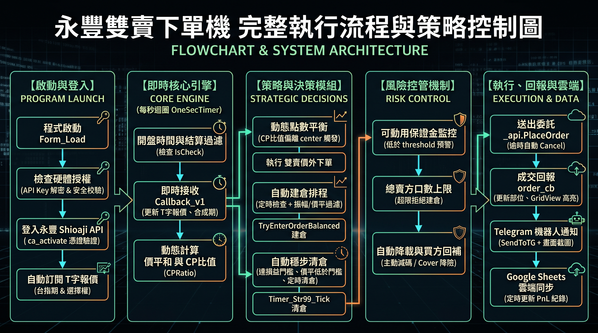
透過本機與硬體驗證防範未授權執行。讀取加密憑證向永豐 API 登入並驗證簽章（_api.ca_activate），成功後動態訂閱 T 字報價。
使用 OneSecTimer 定時迴圈。接收報價後即時計算合成期貨與重要的「價平和 (CPmin)」，動態高亮 GridView 價平位置，避免卡頓漏 Tick。
包含動態點數平衡 (CP 比值偏離自動防守)、自動建倉排程 (定時+振幅過濾)，以及穩步清倉 (達損益門檻自動追價平倉)。完全排除感性交易。
微秒級監控「保證金」與「最大口數上限」。一旦跌破預警水位，系統暫停賣出建倉，強制執行「自動降載」與「買方避險鎖單」，確保帳戶不穿倉。
委託紀錄於本機快照。成交後觸發 order_cb，立刻透過 Telegram 發送當前 UI 截圖通知；並利用 Google Sheets API 定時將權益數與各履約價寫入雲端試算表，達成完全無人值守運營與大數據存檔。
3. 系統主介面與動態 T 字報價 (Dashboard)
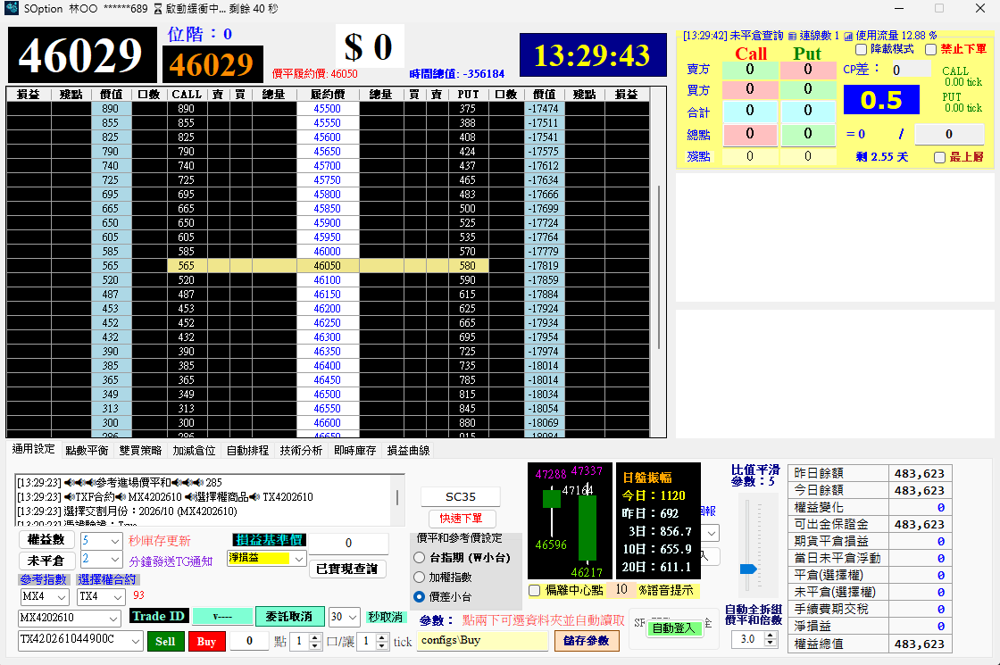
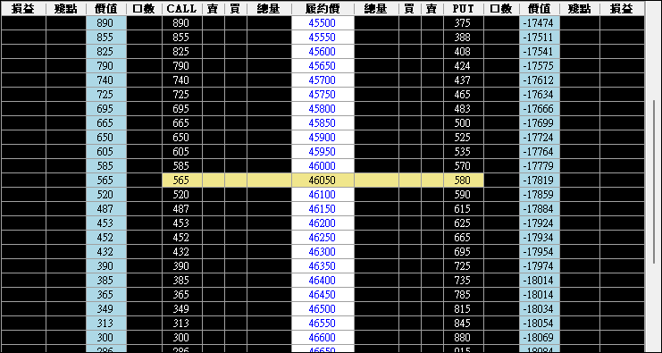
T 字報價與即時監控： 系統利用非同步回呼 (Callback) 處理海量 Tick 報價。中央的 DataGridView 會即時計算出當下的「價平 (ATM)」，並自動扣除合約的內含價值，萃取出最關鍵的「純時間價值 (Time Value)」。
掌握真實的時間價值，程式才能在權利金過高時「自動建倉」，並在權利金收斂至殘餘點數時「自動穩步清倉」，精確鎖定獲利。
4. 動態點數平衡防禦與 K線位階判定
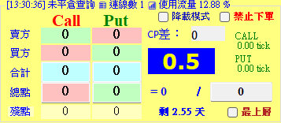
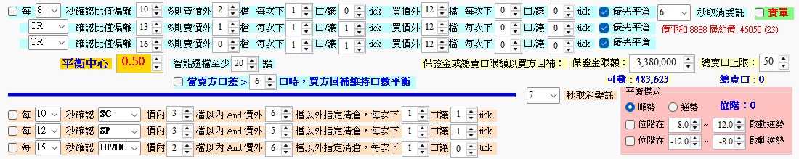
動態點數平衡演算法 (CP Ratio)： 行情急拉或急殺時，賣方部位的一側會急遽虧損。系統將 Call 與 Put 的總殘點轉換為 點數比值 (CP Ratio)。當比值偏離中心點 (如 0.5) 達到自訂門檻，系統即刻發動防守：自動平倉虧損端，或在更遠的價外檔位加碼建倉，強制將 Delta 風險降至中立。
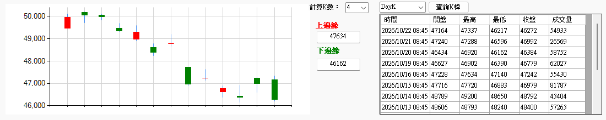
private void ProcessBalanceLogic(int index, double Ratio, double center, CPConfig config)
{
double range = Convert.ToDouble(config.ActionRange.Text) * 0.01;
bool biasToPut = false;
// 1. 偵測比值偏離方向 (Ratio > center 表示上漲，Put 權利金萎縮)
if (Ratio > center + range + temprange) { biasToPut = true; }
else if (Ratio < center - range - temprange) { biasToPut = false; }
else return; // 處於安全平衡區，不動作
// 2. 嚴格風控檢查：保證金是否充裕、賣方總口數是否達上限
decimal margin = _api.Margin().available_margin;
decimal marginLimit = decimal.TryParse(tB_MarginPrice.Text, out decimal lim) ? lim : 0;
int currentS = Math.Abs(int.Parse(CALL_S.Text)) + Math.Abs(int.Parse(PUT_S.Text));
bool isRiskLimitReached = (margin < marginLimit) || (currentS >= TotalS);
// 3. 執行防禦動作
if (isRiskLimitReached) {
Order_MsgLog($"⚠️ 保證金不足或賣口達上限，啟動【買方避險鎖單】");
// ... 執行 Buy Put / Buy Call 降低曝險
} else {
// 資源充足：依據設定價外檔位，動態建立 Sell 部位平衡 Delta
int tryIndex = biasToPut ? atmStrike_Index - mIndex : atmStrike_Index + mIndex;
sendOrder((biasToPut ? "SP" : "SC") + tryIndex, "Auto", config.Qty_S.Text, config.Tick_S.Text, "5", "動態平衡單");
}
}
5. 進階策略與自動排程 (Scheduling & Tactics)
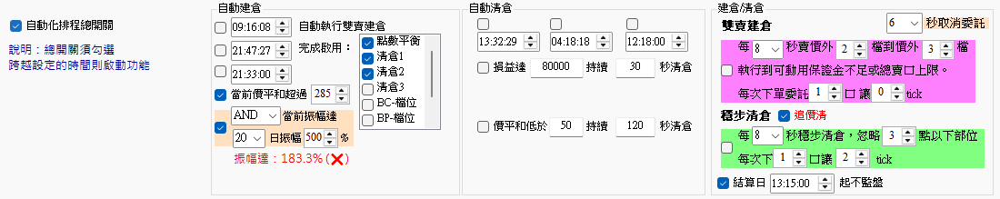
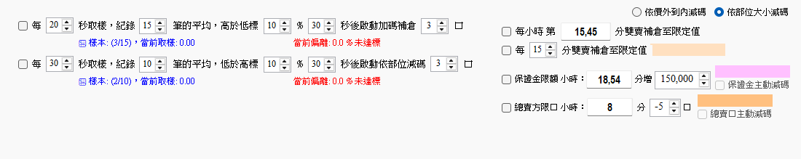
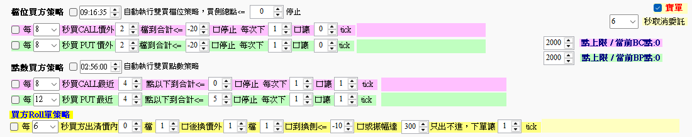
自動穩步清倉 (Step-Clear)： 為了避免大量市價平倉造成「滑價 (Slippage)」，演算法透過定時器，每次以少量口數掃描殘值低於設定值 (如小於 3 點) 的合約，自動掛出限價單平倉，將市場衝擊成本降至最低。
另外，系統內建**買方 Roll 單 (換倉) 機制**。當市場發生單邊突破時，系統會自動平倉獲利的避險買單，並向更遠的價外重新建立買方保護，確保策略在遇到黑天鵝時依然能存活。
6. 外部整合：圖文推播與雲端同步
Telegram 即時圖文推播 (WinForms 截圖技術)
public async Task SendToTG(Form form, string tgMessage)
{
// 精確擷取當前應用程式視窗範圍
Rectangle bounds = form.RectangleToScreen(form.ClientRectangle);
using (var bmp = new Bitmap(bounds.Width, bounds.Height))
using (var g = Graphics.FromImage(bmp))
using (var ms = new MemoryStream())
{
g.CopyFromScreen(bounds.Location, Point.Empty, bounds.Size);
bmp.Save(ms, ImageFormat.Jpeg);
ms.Seek(0, SeekOrigin.Begin);
// 建立 MultipartFormData 發送至 Telegram Bot API
using (var formContent = new MultipartFormDataContent())
{
formContent.Add(new StringContent(chatId), "chat_id");
formContent.Add(new StringContent(tgMessage), "caption");
formContent.Add(new StringContent("HTML"), "parse_mode");
var image = new StreamContent(ms);
image.Headers.ContentType = new MediaTypeHeaderValue("image/jpeg");
formContent.Add(image, "photo", "screenshot.jpg");
await client.PostAsync($"https://api.telegram.org/bot{botToken}/sendPhoto", formContent);
}
}
}
Google Sheets API v4 雲端大數據日誌
public static void UpdateShioajiRow(SheetsService service, string spreadsheetId, string sheetName, ...)
{
// 建立欲寫入的資料陣列
var values = new List> {
new List